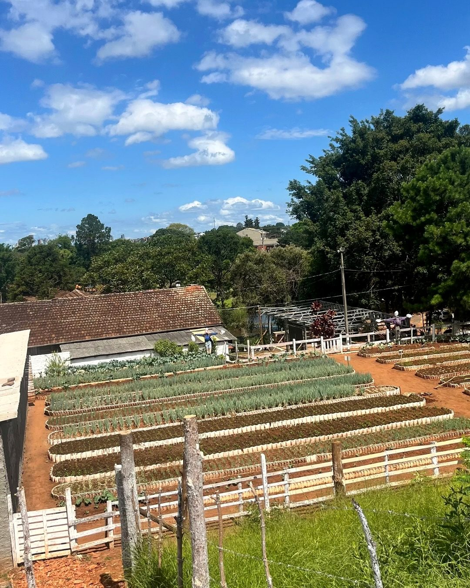
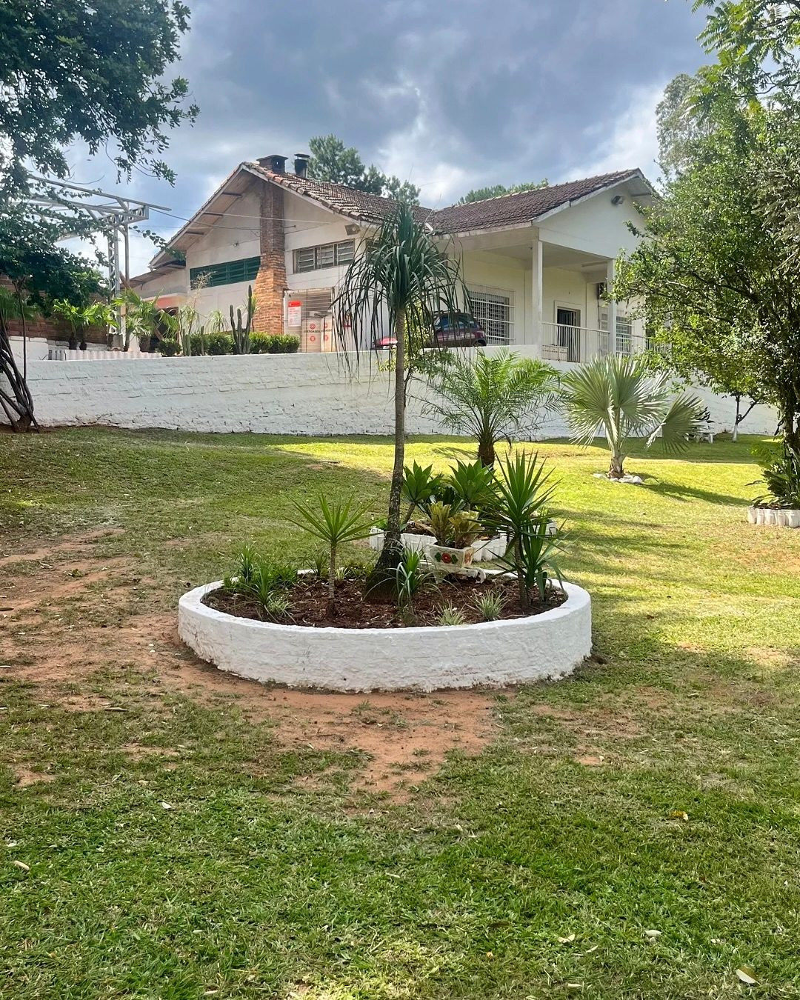

O trabalho que cura e o sustento que fica.
Recuperar não é só afastar do vício. É reconstruir corpo, mente, vínculo e futuro. Cada frente cumpre um papel nessa reconstrução.
Mãos ocupadas, casa sustentada
O trabalho estrutura o dia e ajuda a sustentar a casa. A produção interna gera renda, disciplina e senso de utilidade.

Cultivo e alimentação
A horta abastece a cozinha e ensina o ciclo do plantio ao colheita. Trabalho que é, ao mesmo tempo, terapia e sustento.
Tijolos e meio-fios
Produção que gera renda e capacita em construção civil.
Lenha
Preparo e venda de lenha, com manejo responsável.
PAVS
Produção de pisos de concreto para pátios e calçadas.
Cuidado do pátio
Manutenção das áreas verdes e da estrutura da casa.
Reaprender a viver junto
A convivência é parte do tratamento. Preparar as refeições, cuidar do pátio, dos cachorros e das vacas, participar de atividades em grupo e de educação física — tudo isso reconstrói responsabilidade, vínculo e autoestima.
A rotina compartilhada devolve o senso de pertencimento e ensina, na prática, a viver em comunidade.

Pátio, jardim e cuidado dos animais
Os espaços comuns onde a vida da casa acontece todos os dias.
A base que sustenta a caminhada
A dimensão espiritual está presente sem ser imposta. É ela que dá sentido ao recomeço e sustenta a esperança nos dias difíceis.
Devocionais
Momentos diários de reflexão que abrem e orientam a rotina da casa.
Oração
Espaços de oração que fortalecem o interior e a coletividade.
Culto semanal
Encontro que reúne a casa e celebra cada passo da caminhada.
Preparar o retorno ao mercado
A reinserção precisa de futuro concreto. A capacitação entrega certificação e experiência real de trabalho.
Curso de solda básica
Formação com certificação, ministrada pelo professor Ednardo. Uma qualificação com demanda real no mercado.
Reciclagem de resíduos
Capacitação em triagem e reciclagem, em parceria com a Veiga Sul. Trabalho com propósito ambiental e renda.
Manejo e produção de lenha
Aprendizado prático de manejo, corte e preparo, integrado ao sustento da casa.
Pisos de concreto (PAVS)
Fabricação de pisos de concreto, com técnica aplicável à construção civil.
Sua empresa pode fortalecer uma frente
Doação de insumos, compra da produção, mentoria ou uma nova parceria de capacitação. Há muitas formas de caminhar junto.